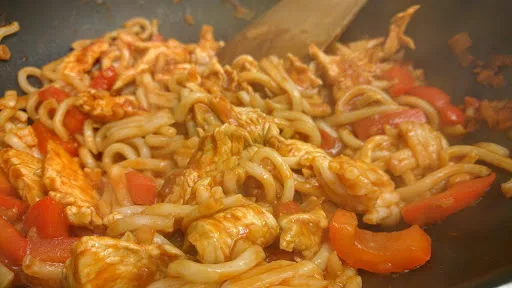

Sweet and sour chicken noodles
25 mins
Serves 2

Ingredients
- 4 spring onions
- ½ red pepper, chopped
- 1 clove garlic, finely chopped
- 1 chicken breast, cut into thin strips
- 0.5x 400 g pack of fresh or ready-to-wok egg noodles
- oil to fry
Sauce
- 2 tbsp tomato puree
- 1 tbsp honey
- 3 tbsp white wine vinegar
- 1 tbsp soy sauce
- 1 tbsp grated fresh ginger
- 6-7 tbsp water
Instructions
- Heat the oil in a wok, add the
onions4
, pepper½
and garlic1 clove
, fry for 1 minute.
- Add the
chicken1
and cook until no longer pink.
- Mix the sauce ingredients together and add. Cook until it bubbles.
- Add the
noodles0.5x 400 g pack
. Cook for 1 minute, stirring well to mix everything together.
- Eat immediately!
Nosh for graduates
Short Link
Long Link